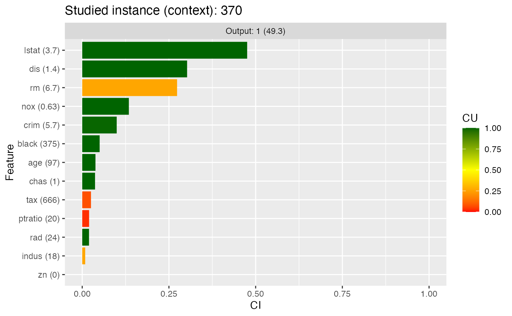

Create CIU object
ciu.new.RdSets up a CIU object with the given parameters. CIU objects have "public" and "private" methods. A CIU object is actually a list whose elements are the public functions (methods).
ciu.new( bb, formula = NULL, data = NULL, in.min.max.limits = NULL, abs.min.max = NULL, input.names = NULL, output.names = NULL, predict.function = NULL, vocabulary = NULL )
Arguments
| bb | Model/"black-box" object. At least all |
|---|---|
| formula | Formula that describes input versus output values. Only to
be used together with |
| data | The training data used for training the model. If this parameter
is provided, a |
| in.min.max.limits | matrix with one row per output and two columns, where the first column indicates the minimal value and the second column the maximal value for that input. |
| abs.min.max | data.frame or matrix of min-max values of outputs, one row per output, two columns (min, max). |
| input.names | labels of inputs. |
| output.names | labels of outputs. |
| predict.function | can be supplied if a model that is not supported by ciu should be used. As an example, this is the function for lda: o.predict.function <- function(model, inputs) { pred <- predict(model,inputs) return(pred$posterior) } |
| vocabulary | list of labels/concepts to be used when producing
explanations and what combination of inputs they correspond to. Example of
two intermediate concepts and a higher-level one that combines them:
|
Value
Object of class CIU.
ciu object
Details
CIU is implemented in an object-oriented manner, where a CIU
object is a list whose methods are made visible as
elements of the list. The general way for using CIU objects is to
first get a CIU object by calling ciu.new as e.g.
ciu <- ciu.new(...), then call ciu.res <- ciu$<method>(...).
The methods that can be used in <method> are:
meta.explain, see ciu.meta.explain (but omit first parameterciu).textual, see ciu.textual (but omit first parameterciu).
"Usage" section is here in "Details" section because Roxygen etc. don't support documentation of functions within functions.
References
Främling, K. Contextual Importance and Utility in R: the 'ciu' Package. In: Proceedings of 1st Workshop on Explainable Agency in Artificial Intelligence, at 35th AAAI Conference on Artificial Intelligence. Virtual, Online. February 8-9, 2021. pp. 110-114. https://www.researchgate.net/publication/349521362_Contextual_Importance_and_Utility_in_R_the_%27ciu%27_Package.
Främling, K. Explainable AI without Interpretable Model. 2020, https://arxiv.org/abs/2009.13996.
Främling, K. Decision Theory Meets Explainable AI. 2020, <doi.org/10.1007/978-3-030-51924-7_4>.
Främling, K. Modélisation et apprentissage des préférences par réseaux de neurones pour l'aide à la décision multicritère. 1996, https://tel.archives-ouvertes.fr/tel-00825854/document (title translation in English: Learning and Explaining Preferences with Neural Networks for Multiple Criteria Decision Making)
Author
Kary Främling
Create ciu object from this CIU object.
Examples
# Explaining the classification of an Iris instance with lda model. # We use a versicolor (instance 100). library(MASS) test.ind <- 100 iris_test <- iris[test.ind, 1:4] iris_train <- iris[-test.ind, 1:4] iris_lab <- iris[[5]][-test.ind] model <- lda(iris_train, iris_lab) # Create CIU object ciu <- ciu.new(model, Species~., iris) # This can be used with explain method for getting CIU values # of one or several inputs. Here we get CIU for all three outputs # with input feature "Petal.Length" that happens to be the most important. ciu$explain(iris_test, 1)#> CI CU cmin cmax outval #> setosa 1.559656e-11 4.034933e-08 1.231112e-23 1.559656e-11 6.293232e-19 #> versicolor 7.481698e-03 9.893524e-01 9.925182e-01 9.999999e-01 9.999203e-01 #> virginica 7.481698e-03 1.064761e-02 6.266952e-08 7.481760e-03 7.972488e-05# It is, however, more convenient to use one of the graphical visualisations. # Here's one using ggplot. ciu$ggplot.col.ciu(iris_test)# LDA creates very sharp class limits, which can also be seen in the CIU # explanation. We can study what the underlying model looks like using # plot.ciu and plot.ciu.3D methods. Here is a 3D plot for all three classes # as a function of Petal Length&Width. Iris #100 (shown as the red dot) # is on the ridge of the "versicolor" class, which is quite narrow for # Petal Length&Width. ciu$plot.ciu.3D(iris_test,c(3,4),1,main=levels(iris$Species)[1],)# Same thing with a regression task, the Boston Housing data set. Instance # #370 has the highest valuation (50k$). Model is gbm, which performs # decently here. Plotting with "standard" bar plot this time. # Use something like "par(mai=c(0.8,1.2,0.4,0.2))" for seeing Y-axis labels. library(caret) gbm <- train(medv ~ ., Boston, method="gbm", trControl=trainControl(method="cv", number=10))#> Iter TrainDeviance ValidDeviance StepSize Improve #> 1 75.2215 nan 0.1000 6.8978 #> 2 69.0293 nan 0.1000 4.6034 #> 3 63.3583 nan 0.1000 5.8052 #> 4 59.3108 nan 0.1000 4.5997 #> 5 54.7956 nan 0.1000 4.2274 #> 6 51.2700 nan 0.1000 3.5988 #> 7 47.7351 nan 0.1000 3.4051 #> 8 44.5695 nan 0.1000 3.0483 #> 9 42.0724 nan 0.1000 2.3546 #> 10 39.7807 nan 0.1000 2.2714 #> 20 24.5963 nan 0.1000 0.8707 #> 40 16.1454 nan 0.1000 0.1642 #> 60 13.7594 nan 0.1000 -0.0137 #> 80 12.6018 nan 0.1000 0.0113 #> 100 11.5040 nan 0.1000 0.0074 #> 120 10.8995 nan 0.1000 0.0224 #> 140 10.3805 nan 0.1000 -0.0062 #> 150 10.2202 nan 0.1000 0.0002 #> #> Iter TrainDeviance ValidDeviance StepSize Improve #> 1 72.6868 nan 0.1000 8.9776 #> 2 64.5885 nan 0.1000 7.8700 #> 3 57.6530 nan 0.1000 6.4313 #> 4 51.8981 nan 0.1000 5.6741 #> 5 46.1563 nan 0.1000 5.0209 #> 6 41.4214 nan 0.1000 3.7439 #> 7 38.0055 nan 0.1000 3.0250 #> 8 34.9250 nan 0.1000 2.7428 #> 9 32.6519 nan 0.1000 1.7717 #> 10 29.8366 nan 0.1000 2.8965 #> 20 17.3859 nan 0.1000 0.3868 #> 40 11.8289 nan 0.1000 0.0068 #> 60 10.0104 nan 0.1000 -0.0545 #> 80 8.8538 nan 0.1000 0.0128 #> 100 8.1414 nan 0.1000 -0.0192 #> 120 7.5245 nan 0.1000 -0.0078 #> 140 7.0487 nan 0.1000 -0.0129 #> 150 6.8948 nan 0.1000 -0.0391 #> #> Iter TrainDeviance ValidDeviance StepSize Improve #> 1 71.3771 nan 0.1000 10.5163 #> 2 62.4916 nan 0.1000 9.2678 #> 3 54.6342 nan 0.1000 6.5825 #> 4 48.4288 nan 0.1000 5.9510 #> 5 43.2605 nan 0.1000 5.6658 #> 6 38.5667 nan 0.1000 5.0132 #> 7 34.7180 nan 0.1000 3.4970 #> 8 30.7270 nan 0.1000 3.3379 #> 9 27.9259 nan 0.1000 2.0486 #> 10 25.3477 nan 0.1000 2.2926 #> 20 14.6684 nan 0.1000 0.4009 #> 40 9.5936 nan 0.1000 -0.0146 #> 60 7.8769 nan 0.1000 -0.0946 #> 80 6.8332 nan 0.1000 0.0434 #> 100 5.9483 nan 0.1000 -0.0471 #> 120 5.2966 nan 0.1000 -0.0600 #> 140 4.7939 nan 0.1000 -0.0218 #> 150 4.5001 nan 0.1000 -0.0362 #> #> Iter TrainDeviance ValidDeviance StepSize Improve #> 1 76.7738 nan 0.1000 8.4336 #> 2 71.1446 nan 0.1000 5.8958 #> 3 65.6121 nan 0.1000 5.5614 #> 4 61.0126 nan 0.1000 4.9041 #> 5 57.1632 nan 0.1000 3.9673 #> 6 53.6348 nan 0.1000 3.6524 #> 7 50.1963 nan 0.1000 3.0240 #> 8 47.1070 nan 0.1000 2.9846 #> 9 43.8722 nan 0.1000 3.3161 #> 10 41.5290 nan 0.1000 2.3191 #> 20 26.1675 nan 0.1000 0.8036 #> 40 16.6667 nan 0.1000 0.0909 #> 60 13.7448 nan 0.1000 -0.0243 #> 80 12.2713 nan 0.1000 0.0238 #> 100 11.4109 nan 0.1000 -0.0819 #> 120 10.6749 nan 0.1000 -0.0065 #> 140 10.3056 nan 0.1000 -0.1383 #> 150 10.1531 nan 0.1000 -0.0546 #> #> Iter TrainDeviance ValidDeviance StepSize Improve #> 1 73.4591 nan 0.1000 8.8822 #> 2 64.8771 nan 0.1000 7.5361 #> 3 57.3431 nan 0.1000 7.2688 #> 4 51.3496 nan 0.1000 6.7225 #> 5 46.2060 nan 0.1000 4.3277 #> 6 42.0797 nan 0.1000 3.7296 #> 7 37.5882 nan 0.1000 3.1789 #> 8 34.3908 nan 0.1000 3.0324 #> 9 31.5965 nan 0.1000 2.8463 #> 10 29.2291 nan 0.1000 2.4189 #> 20 16.9907 nan 0.1000 0.2216 #> 40 11.2138 nan 0.1000 0.0297 #> 60 9.1126 nan 0.1000 0.0320 #> 80 8.1850 nan 0.1000 -0.0476 #> 100 7.5391 nan 0.1000 -0.1310 #> 120 7.0835 nan 0.1000 -0.1116 #> 140 6.6674 nan 0.1000 -0.0294 #> 150 6.4873 nan 0.1000 -0.0450 #> #> Iter TrainDeviance ValidDeviance StepSize Improve #> 1 73.1397 nan 0.1000 11.1309 #> 2 63.7495 nan 0.1000 8.0026 #> 3 56.5209 nan 0.1000 6.3725 #> 4 49.6279 nan 0.1000 7.2836 #> 5 44.4202 nan 0.1000 5.4798 #> 6 39.7959 nan 0.1000 4.5078 #> 7 35.8225 nan 0.1000 2.9153 #> 8 32.5884 nan 0.1000 3.1374 #> 9 29.7437 nan 0.1000 2.5818 #> 10 27.3284 nan 0.1000 2.3490 #> 20 14.6933 nan 0.1000 0.4500 #> 40 9.7858 nan 0.1000 -0.2021 #> 60 7.7544 nan 0.1000 -0.0809 #> 80 6.6470 nan 0.1000 0.0023 #> 100 5.8356 nan 0.1000 -0.0267 #> 120 5.1906 nan 0.1000 -0.0423 #> 140 4.7346 nan 0.1000 -0.0277 #> 150 4.4534 nan 0.1000 -0.0355 #> #> Iter TrainDeviance ValidDeviance StepSize Improve #> 1 76.8040 nan 0.1000 7.4688 #> 2 70.2747 nan 0.1000 6.5896 #> 3 64.5188 nan 0.1000 5.4622 #> 4 59.7857 nan 0.1000 4.1791 #> 5 55.1745 nan 0.1000 3.9433 #> 6 51.0123 nan 0.1000 3.5584 #> 7 47.2476 nan 0.1000 2.7351 #> 8 44.5557 nan 0.1000 2.7372 #> 9 41.9307 nan 0.1000 2.5856 #> 10 39.6549 nan 0.1000 2.2152 #> 20 24.6651 nan 0.1000 1.1121 #> 40 15.9357 nan 0.1000 0.0718 #> 60 13.3529 nan 0.1000 0.0588 #> 80 12.1354 nan 0.1000 -0.0046 #> 100 11.3562 nan 0.1000 0.0299 #> 120 10.7728 nan 0.1000 0.0174 #> 140 10.3192 nan 0.1000 -0.0477 #> 150 10.1195 nan 0.1000 0.0055 #> #> Iter TrainDeviance ValidDeviance StepSize Improve #> 1 74.8691 nan 0.1000 10.8877 #> 2 67.2161 nan 0.1000 6.0468 #> 3 59.6747 nan 0.1000 6.9134 #> 4 53.1041 nan 0.1000 5.9229 #> 5 47.5612 nan 0.1000 5.2945 #> 6 42.5285 nan 0.1000 4.2424 #> 7 39.0056 nan 0.1000 3.5848 #> 8 35.5429 nan 0.1000 3.1408 #> 9 32.5220 nan 0.1000 2.9962 #> 10 30.3044 nan 0.1000 2.0074 #> 20 18.0016 nan 0.1000 0.6282 #> 40 11.6828 nan 0.1000 -0.0019 #> 60 9.8753 nan 0.1000 -0.0465 #> 80 8.6668 nan 0.1000 -0.0123 #> 100 7.8213 nan 0.1000 -0.1204 #> 120 7.1295 nan 0.1000 -0.0080 #> 140 6.5539 nan 0.1000 0.0001 #> 150 6.3375 nan 0.1000 -0.0179 #> #> Iter TrainDeviance ValidDeviance StepSize Improve #> 1 73.5943 nan 0.1000 8.8998 #> 2 63.8609 nan 0.1000 9.5584 #> 3 56.1351 nan 0.1000 6.4727 #> 4 49.4071 nan 0.1000 6.1019 #> 5 43.7107 nan 0.1000 4.9606 #> 6 39.0010 nan 0.1000 4.7175 #> 7 35.2047 nan 0.1000 3.5995 #> 8 31.7243 nan 0.1000 2.7477 #> 9 29.0473 nan 0.1000 2.5923 #> 10 26.7034 nan 0.1000 1.8947 #> 20 15.0040 nan 0.1000 0.3184 #> 40 9.8791 nan 0.1000 -0.0793 #> 60 8.1816 nan 0.1000 0.0718 #> 80 7.0478 nan 0.1000 0.0078 #> 100 6.0930 nan 0.1000 -0.0482 #> 120 5.4193 nan 0.1000 -0.0161 #> 140 4.9356 nan 0.1000 -0.0495 #> 150 4.7134 nan 0.1000 -0.0464 #> #> Iter TrainDeviance ValidDeviance StepSize Improve #> 1 78.5786 nan 0.1000 6.9195 #> 2 72.7192 nan 0.1000 5.8624 #> 3 67.2927 nan 0.1000 5.9055 #> 4 61.8352 nan 0.1000 5.2196 #> 5 57.1151 nan 0.1000 3.4065 #> 6 53.3717 nan 0.1000 3.6489 #> 7 49.4470 nan 0.1000 3.7639 #> 8 45.8854 nan 0.1000 3.4214 #> 9 43.2803 nan 0.1000 2.5329 #> 10 40.3682 nan 0.1000 3.3280 #> 20 24.8608 nan 0.1000 0.9846 #> 40 16.5028 nan 0.1000 -0.3605 #> 60 13.6580 nan 0.1000 -0.0075 #> 80 12.3327 nan 0.1000 0.0203 #> 100 11.4903 nan 0.1000 -0.1157 #> 120 10.9021 nan 0.1000 -0.0180 #> 140 10.4160 nan 0.1000 -0.0032 #> 150 10.1745 nan 0.1000 -0.1270 #> #> Iter TrainDeviance ValidDeviance StepSize Improve #> 1 75.9599 nan 0.1000 9.1555 #> 2 66.6906 nan 0.1000 10.4896 #> 3 59.0460 nan 0.1000 6.6804 #> 4 52.3169 nan 0.1000 5.8702 #> 5 47.6757 nan 0.1000 4.3725 #> 6 42.5698 nan 0.1000 5.3351 #> 7 39.0018 nan 0.1000 3.3602 #> 8 35.6545 nan 0.1000 3.0546 #> 9 32.6168 nan 0.1000 1.7713 #> 10 30.2041 nan 0.1000 1.5723 #> 20 17.8120 nan 0.1000 0.6658 #> 40 11.3761 nan 0.1000 -0.0865 #> 60 9.6437 nan 0.1000 -0.0865 #> 80 8.3940 nan 0.1000 -0.0123 #> 100 7.4801 nan 0.1000 0.0262 #> 120 7.0649 nan 0.1000 -0.0400 #> 140 6.5968 nan 0.1000 -0.0299 #> 150 6.3471 nan 0.1000 -0.0364 #> #> Iter TrainDeviance ValidDeviance StepSize Improve #> 1 74.5418 nan 0.1000 12.3252 #> 2 65.1344 nan 0.1000 7.6373 #> 3 56.7609 nan 0.1000 7.4660 #> 4 50.7330 nan 0.1000 5.3254 #> 5 44.7576 nan 0.1000 4.8813 #> 6 40.1303 nan 0.1000 4.1004 #> 7 35.8623 nan 0.1000 3.7212 #> 8 32.0736 nan 0.1000 3.2933 #> 9 29.1561 nan 0.1000 2.6692 #> 10 26.7989 nan 0.1000 1.8241 #> 20 14.8189 nan 0.1000 0.4251 #> 40 9.7378 nan 0.1000 0.0324 #> 60 7.7832 nan 0.1000 -0.0454 #> 80 6.6908 nan 0.1000 -0.0333 #> 100 5.8557 nan 0.1000 -0.0009 #> 120 5.1928 nan 0.1000 -0.0277 #> 140 4.6891 nan 0.1000 -0.0305 #> 150 4.5041 nan 0.1000 -0.0276 #> #> Iter TrainDeviance ValidDeviance StepSize Improve #> 1 75.7485 nan 0.1000 6.9327 #> 2 69.6634 nan 0.1000 5.4405 #> 3 64.5752 nan 0.1000 5.0511 #> 4 60.2439 nan 0.1000 4.0340 #> 5 55.7645 nan 0.1000 3.4482 #> 6 51.5007 nan 0.1000 3.6832 #> 7 48.3182 nan 0.1000 2.4533 #> 8 45.1272 nan 0.1000 2.2213 #> 9 42.6756 nan 0.1000 2.5857 #> 10 40.0820 nan 0.1000 2.1918 #> 20 25.5645 nan 0.1000 0.6341 #> 40 17.1041 nan 0.1000 0.0784 #> 60 14.1966 nan 0.1000 0.0337 #> 80 12.7153 nan 0.1000 0.0498 #> 100 11.7908 nan 0.1000 -0.0283 #> 120 11.1768 nan 0.1000 0.0185 #> 140 10.6801 nan 0.1000 -0.0677 #> 150 10.4611 nan 0.1000 -0.0301 #> #> Iter TrainDeviance ValidDeviance StepSize Improve #> 1 73.0659 nan 0.1000 9.1318 #> 2 64.2970 nan 0.1000 9.3265 #> 3 57.4705 nan 0.1000 6.6968 #> 4 51.3866 nan 0.1000 4.7160 #> 5 46.5479 nan 0.1000 5.3462 #> 6 42.5645 nan 0.1000 3.7964 #> 7 39.1750 nan 0.1000 2.8972 #> 8 35.8827 nan 0.1000 3.0855 #> 9 33.2833 nan 0.1000 2.3238 #> 10 30.9492 nan 0.1000 2.3366 #> 20 18.5410 nan 0.1000 0.3225 #> 40 12.6757 nan 0.1000 0.0113 #> 60 10.4531 nan 0.1000 0.0356 #> 80 9.2029 nan 0.1000 0.0222 #> 100 8.2018 nan 0.1000 0.0267 #> 120 7.5514 nan 0.1000 -0.0133 #> 140 6.9769 nan 0.1000 -0.0732 #> 150 6.7547 nan 0.1000 -0.0177 #> #> Iter TrainDeviance ValidDeviance StepSize Improve #> 1 72.3460 nan 0.1000 10.3615 #> 2 63.5909 nan 0.1000 8.8323 #> 3 55.8229 nan 0.1000 7.7115 #> 4 49.0036 nan 0.1000 6.1812 #> 5 44.1010 nan 0.1000 4.8901 #> 6 39.6666 nan 0.1000 3.7592 #> 7 35.6623 nan 0.1000 3.2195 #> 8 32.4367 nan 0.1000 2.4554 #> 9 29.9488 nan 0.1000 2.4358 #> 10 27.7897 nan 0.1000 2.2332 #> 20 15.6336 nan 0.1000 0.4269 #> 40 10.2381 nan 0.1000 -0.0015 #> 60 8.1738 nan 0.1000 -0.0044 #> 80 7.2826 nan 0.1000 -0.1106 #> 100 6.5248 nan 0.1000 -0.0798 #> 120 5.9178 nan 0.1000 0.0109 #> 140 5.4265 nan 0.1000 -0.0809 #> 150 5.2025 nan 0.1000 -0.0433 #> #> Iter TrainDeviance ValidDeviance StepSize Improve #> 1 79.4476 nan 0.1000 7.1708 #> 2 72.6322 nan 0.1000 5.7331 #> 3 66.5594 nan 0.1000 6.3091 #> 4 61.5776 nan 0.1000 5.0887 #> 5 56.6927 nan 0.1000 3.5906 #> 6 53.3405 nan 0.1000 3.7300 #> 7 49.5067 nan 0.1000 3.8880 #> 8 46.2729 nan 0.1000 3.3041 #> 9 43.4807 nan 0.1000 2.9592 #> 10 40.9435 nan 0.1000 2.4302 #> 20 25.2949 nan 0.1000 0.7768 #> 40 16.5360 nan 0.1000 0.1475 #> 60 13.4236 nan 0.1000 0.0739 #> 80 12.0431 nan 0.1000 0.0338 #> 100 11.0700 nan 0.1000 0.0144 #> 120 10.5278 nan 0.1000 -0.1386 #> 140 10.1150 nan 0.1000 -0.0406 #> 150 9.9450 nan 0.1000 -0.0205 #> #> Iter TrainDeviance ValidDeviance StepSize Improve #> 1 76.5246 nan 0.1000 9.5723 #> 2 67.4173 nan 0.1000 8.9899 #> 3 59.1241 nan 0.1000 8.5815 #> 4 52.1458 nan 0.1000 6.7935 #> 5 46.8238 nan 0.1000 4.7861 #> 6 42.5999 nan 0.1000 3.6909 #> 7 39.0345 nan 0.1000 3.1663 #> 8 35.4331 nan 0.1000 2.7985 #> 9 32.8260 nan 0.1000 2.2354 #> 10 30.4869 nan 0.1000 2.4409 #> 20 17.1479 nan 0.1000 0.4609 #> 40 10.9760 nan 0.1000 -0.0099 #> 60 8.8049 nan 0.1000 -0.0030 #> 80 7.9488 nan 0.1000 -0.0036 #> 100 7.1971 nan 0.1000 -0.0386 #> 120 6.7734 nan 0.1000 -0.0199 #> 140 6.2783 nan 0.1000 -0.0628 #> 150 6.0899 nan 0.1000 -0.0232 #> #> Iter TrainDeviance ValidDeviance StepSize Improve #> 1 74.2180 nan 0.1000 10.5948 #> 2 64.4481 nan 0.1000 9.4499 #> 3 56.3272 nan 0.1000 8.4460 #> 4 49.8784 nan 0.1000 5.5917 #> 5 43.7570 nan 0.1000 5.1252 #> 6 39.0331 nan 0.1000 4.7365 #> 7 35.0203 nan 0.1000 3.8636 #> 8 31.7871 nan 0.1000 3.2271 #> 9 29.2290 nan 0.1000 2.1444 #> 10 26.7544 nan 0.1000 2.1724 #> 20 14.4163 nan 0.1000 0.1928 #> 40 8.8956 nan 0.1000 0.0865 #> 60 7.1234 nan 0.1000 -0.0323 #> 80 6.1481 nan 0.1000 -0.0288 #> 100 5.3770 nan 0.1000 -0.0423 #> 120 4.7898 nan 0.1000 -0.0323 #> 140 4.2568 nan 0.1000 0.0056 #> 150 4.0711 nan 0.1000 -0.0195 #> #> Iter TrainDeviance ValidDeviance StepSize Improve #> 1 76.8519 nan 0.1000 6.8054 #> 2 69.9920 nan 0.1000 5.9507 #> 3 64.6248 nan 0.1000 5.5362 #> 4 59.4803 nan 0.1000 4.5967 #> 5 55.4540 nan 0.1000 4.0542 #> 6 50.8745 nan 0.1000 3.9006 #> 7 47.9101 nan 0.1000 3.0746 #> 8 44.6412 nan 0.1000 2.6462 #> 9 41.4789 nan 0.1000 2.6855 #> 10 38.8653 nan 0.1000 2.5714 #> 20 23.8658 nan 0.1000 0.6596 #> 40 15.1431 nan 0.1000 0.0731 #> 60 12.4555 nan 0.1000 0.0002 #> 80 11.1922 nan 0.1000 -0.0422 #> 100 10.4937 nan 0.1000 -0.0712 #> 120 10.0431 nan 0.1000 -0.1249 #> 140 9.6669 nan 0.1000 -0.0925 #> 150 9.4278 nan 0.1000 -0.0073 #> #> Iter TrainDeviance ValidDeviance StepSize Improve #> 1 73.4166 nan 0.1000 10.9917 #> 2 65.1353 nan 0.1000 7.8150 #> 3 57.9120 nan 0.1000 6.9625 #> 4 51.2631 nan 0.1000 6.0544 #> 5 45.6116 nan 0.1000 4.4515 #> 6 41.4174 nan 0.1000 5.1220 #> 7 37.2390 nan 0.1000 3.6446 #> 8 33.6723 nan 0.1000 2.8674 #> 9 30.6742 nan 0.1000 2.4399 #> 10 28.5444 nan 0.1000 1.8482 #> 20 16.0042 nan 0.1000 0.4966 #> 40 10.8595 nan 0.1000 -0.0402 #> 60 9.0567 nan 0.1000 -0.0634 #> 80 7.9821 nan 0.1000 -0.0162 #> 100 7.1366 nan 0.1000 -0.0288 #> 120 6.6498 nan 0.1000 -0.0131 #> 140 6.2635 nan 0.1000 -0.0285 #> 150 6.0008 nan 0.1000 -0.0356 #> #> Iter TrainDeviance ValidDeviance StepSize Improve #> 1 72.6587 nan 0.1000 11.3624 #> 2 63.9974 nan 0.1000 8.5424 #> 3 55.8572 nan 0.1000 8.3204 #> 4 49.0877 nan 0.1000 6.6283 #> 5 43.3484 nan 0.1000 5.7637 #> 6 38.6945 nan 0.1000 4.6310 #> 7 34.8282 nan 0.1000 3.9905 #> 8 31.7400 nan 0.1000 2.9346 #> 9 29.0426 nan 0.1000 2.6107 #> 10 26.9795 nan 0.1000 1.8381 #> 20 15.2926 nan 0.1000 0.3725 #> 40 9.8728 nan 0.1000 0.0506 #> 60 7.8063 nan 0.1000 0.0469 #> 80 6.6526 nan 0.1000 -0.0396 #> 100 5.7797 nan 0.1000 -0.0164 #> 120 5.1117 nan 0.1000 -0.0511 #> 140 4.4825 nan 0.1000 -0.0364 #> 150 4.2835 nan 0.1000 -0.0234 #> #> Iter TrainDeviance ValidDeviance StepSize Improve #> 1 75.4000 nan 0.1000 7.2250 #> 2 69.2894 nan 0.1000 6.0352 #> 3 63.6127 nan 0.1000 5.4274 #> 4 58.5594 nan 0.1000 5.0902 #> 5 54.7333 nan 0.1000 4.0082 #> 6 50.5214 nan 0.1000 3.7558 #> 7 46.7302 nan 0.1000 2.3370 #> 8 43.9954 nan 0.1000 2.7139 #> 9 41.2543 nan 0.1000 2.2706 #> 10 39.0149 nan 0.1000 1.9967 #> 20 23.9018 nan 0.1000 0.7162 #> 40 15.1786 nan 0.1000 0.1196 #> 60 12.4140 nan 0.1000 0.0394 #> 80 11.0875 nan 0.1000 0.0300 #> 100 10.3673 nan 0.1000 -0.0002 #> 120 9.8704 nan 0.1000 -0.1034 #> 140 9.4561 nan 0.1000 -0.0149 #> 150 9.2821 nan 0.1000 -0.0023 #> #> Iter TrainDeviance ValidDeviance StepSize Improve #> 1 72.7703 nan 0.1000 9.1465 #> 2 65.6603 nan 0.1000 5.3330 #> 3 58.2233 nan 0.1000 8.1325 #> 4 51.3041 nan 0.1000 5.1951 #> 5 46.1774 nan 0.1000 4.6104 #> 6 41.9580 nan 0.1000 4.1022 #> 7 38.0685 nan 0.1000 3.3206 #> 8 34.7052 nan 0.1000 2.9871 #> 9 32.0901 nan 0.1000 2.6271 #> 10 29.8716 nan 0.1000 1.6289 #> 20 17.1905 nan 0.1000 0.4074 #> 40 11.4483 nan 0.1000 0.0978 #> 60 9.4345 nan 0.1000 0.0312 #> 80 8.1563 nan 0.1000 -0.0774 #> 100 7.2918 nan 0.1000 -0.0419 #> 120 6.7684 nan 0.1000 -0.0260 #> 140 6.2148 nan 0.1000 -0.1119 #> 150 6.0297 nan 0.1000 -0.0359 #> #> Iter TrainDeviance ValidDeviance StepSize Improve #> 1 71.8918 nan 0.1000 11.2823 #> 2 62.8180 nan 0.1000 7.4777 #> 3 55.1612 nan 0.1000 8.2676 #> 4 49.2064 nan 0.1000 5.1851 #> 5 44.1723 nan 0.1000 5.3568 #> 6 39.2100 nan 0.1000 4.9039 #> 7 34.9435 nan 0.1000 3.4715 #> 8 31.4259 nan 0.1000 3.2643 #> 9 28.4566 nan 0.1000 2.2000 #> 10 25.9366 nan 0.1000 2.8554 #> 20 14.1047 nan 0.1000 0.3932 #> 40 9.0166 nan 0.1000 -0.0165 #> 60 7.3440 nan 0.1000 -0.0158 #> 80 6.2747 nan 0.1000 -0.0170 #> 100 5.4622 nan 0.1000 -0.0429 #> 120 5.0061 nan 0.1000 -0.0400 #> 140 4.5056 nan 0.1000 -0.0275 #> 150 4.2676 nan 0.1000 -0.0267 #> #> Iter TrainDeviance ValidDeviance StepSize Improve #> 1 77.4600 nan 0.1000 6.5687 #> 2 70.8867 nan 0.1000 4.9060 #> 3 64.6955 nan 0.1000 5.6529 #> 4 59.9859 nan 0.1000 3.9946 #> 5 56.0454 nan 0.1000 3.8114 #> 6 51.9914 nan 0.1000 3.5306 #> 7 48.3747 nan 0.1000 3.3094 #> 8 45.3677 nan 0.1000 2.6744 #> 9 42.8317 nan 0.1000 2.7686 #> 10 40.3437 nan 0.1000 2.3182 #> 20 25.6068 nan 0.1000 0.8630 #> 40 17.1166 nan 0.1000 0.1687 #> 60 14.1175 nan 0.1000 0.0309 #> 80 12.6588 nan 0.1000 0.0013 #> 100 11.8067 nan 0.1000 -0.0088 #> 120 11.1403 nan 0.1000 -0.0611 #> 140 10.6241 nan 0.1000 -0.0741 #> 150 10.4650 nan 0.1000 -0.0734 #> #> Iter TrainDeviance ValidDeviance StepSize Improve #> 1 74.9073 nan 0.1000 9.3004 #> 2 65.9944 nan 0.1000 8.1190 #> 3 59.2835 nan 0.1000 7.1511 #> 4 52.3194 nan 0.1000 6.2795 #> 5 47.7169 nan 0.1000 4.2998 #> 6 43.2973 nan 0.1000 3.6874 #> 7 39.3587 nan 0.1000 3.9562 #> 8 35.5712 nan 0.1000 3.6318 #> 9 32.8006 nan 0.1000 2.1557 #> 10 30.2425 nan 0.1000 2.1217 #> 20 18.0906 nan 0.1000 0.5182 #> 40 11.7831 nan 0.1000 0.0660 #> 60 9.9137 nan 0.1000 -0.0560 #> 80 8.7057 nan 0.1000 -0.0030 #> 100 7.9219 nan 0.1000 0.0129 #> 120 7.2386 nan 0.1000 0.0100 #> 140 6.7532 nan 0.1000 -0.0276 #> 150 6.5768 nan 0.1000 -0.0685 #> #> Iter TrainDeviance ValidDeviance StepSize Improve #> 1 73.4544 nan 0.1000 12.4799 #> 2 64.3402 nan 0.1000 8.9031 #> 3 55.9726 nan 0.1000 7.4548 #> 4 49.8272 nan 0.1000 5.8159 #> 5 44.4005 nan 0.1000 5.8016 #> 6 39.9629 nan 0.1000 4.4427 #> 7 35.7907 nan 0.1000 3.9682 #> 8 32.3343 nan 0.1000 2.9339 #> 9 29.5344 nan 0.1000 1.9453 #> 10 27.2546 nan 0.1000 1.7991 #> 20 14.8919 nan 0.1000 0.3093 #> 40 9.3560 nan 0.1000 0.0768 #> 60 7.4800 nan 0.1000 -0.0134 #> 80 6.5591 nan 0.1000 -0.0102 #> 100 5.7901 nan 0.1000 -0.0241 #> 120 5.1426 nan 0.1000 -0.0187 #> 140 4.6686 nan 0.1000 -0.0425 #> 150 4.4692 nan 0.1000 -0.0534 #> #> Iter TrainDeviance ValidDeviance StepSize Improve #> 1 78.9591 nan 0.1000 7.4893 #> 2 72.4911 nan 0.1000 5.4848 #> 3 67.2749 nan 0.1000 5.7984 #> 4 62.3920 nan 0.1000 5.0667 #> 5 57.1122 nan 0.1000 4.8612 #> 6 53.6210 nan 0.1000 3.1344 #> 7 49.8651 nan 0.1000 3.8245 #> 8 46.5105 nan 0.1000 2.9344 #> 9 43.8282 nan 0.1000 2.4877 #> 10 40.8560 nan 0.1000 2.6822 #> 20 25.7784 nan 0.1000 0.7492 #> 40 16.7139 nan 0.1000 0.0909 #> 60 14.0135 nan 0.1000 0.0164 #> 80 12.5675 nan 0.1000 -0.1319 #> 100 11.7075 nan 0.1000 0.0128 #> 120 11.1505 nan 0.1000 0.0048 #> 140 10.7388 nan 0.1000 -0.1186 #> 150 10.5614 nan 0.1000 -0.0550 #> #> Iter TrainDeviance ValidDeviance StepSize Improve #> 1 76.2432 nan 0.1000 9.5774 #> 2 67.8073 nan 0.1000 8.0742 #> 3 60.7494 nan 0.1000 7.6142 #> 4 53.8795 nan 0.1000 6.9150 #> 5 48.2101 nan 0.1000 5.7604 #> 6 43.6234 nan 0.1000 4.5357 #> 7 40.4286 nan 0.1000 3.1330 #> 8 37.4250 nan 0.1000 3.1494 #> 9 34.2596 nan 0.1000 2.5551 #> 10 31.7023 nan 0.1000 2.4798 #> 20 18.7414 nan 0.1000 0.3875 #> 40 11.9012 nan 0.1000 0.0696 #> 60 10.1634 nan 0.1000 -0.0262 #> 80 9.0248 nan 0.1000 -0.0509 #> 100 8.2522 nan 0.1000 -0.0569 #> 120 7.6305 nan 0.1000 -0.0244 #> 140 7.0522 nan 0.1000 0.0132 #> 150 6.7882 nan 0.1000 -0.0266 #> #> Iter TrainDeviance ValidDeviance StepSize Improve #> 1 74.8544 nan 0.1000 8.4810 #> 2 65.2387 nan 0.1000 9.1911 #> 3 57.2865 nan 0.1000 7.5138 #> 4 50.5753 nan 0.1000 6.6622 #> 5 45.1579 nan 0.1000 5.1404 #> 6 40.3297 nan 0.1000 4.6956 #> 7 36.9159 nan 0.1000 3.4420 #> 8 33.3253 nan 0.1000 3.2902 #> 9 30.3346 nan 0.1000 2.6114 #> 10 27.8924 nan 0.1000 2.1573 #> 20 14.7679 nan 0.1000 0.5343 #> 40 9.7143 nan 0.1000 0.0438 #> 60 7.9811 nan 0.1000 -0.0306 #> 80 6.8359 nan 0.1000 -0.0455 #> 100 6.0110 nan 0.1000 -0.0373 #> 120 5.3897 nan 0.1000 -0.0163 #> 140 4.9587 nan 0.1000 -0.0379 #> 150 4.6673 nan 0.1000 -0.0230 #> #> Iter TrainDeviance ValidDeviance StepSize Improve #> 1 72.9026 nan 0.1000 11.4077 #> 2 63.9185 nan 0.1000 7.6255 #> 3 57.4803 nan 0.1000 5.2913 #> 4 50.4845 nan 0.1000 6.3624 #> 5 44.4957 nan 0.1000 5.3184 #> 6 39.2164 nan 0.1000 5.6630 #> 7 35.6417 nan 0.1000 3.3662 #> 8 32.0365 nan 0.1000 2.6934 #> 9 29.1698 nan 0.1000 2.7016 #> 10 26.9136 nan 0.1000 1.7254 #> 20 14.4459 nan 0.1000 0.3651 #> 40 9.3423 nan 0.1000 0.0979 #> 60 7.6699 nan 0.1000 -0.0491 #> 80 6.7083 nan 0.1000 -0.0033 #> 100 5.9702 nan 0.1000 -0.0433 #> 120 5.3980 nan 0.1000 -0.0183 #> 140 4.9431 nan 0.1000 -0.0441 #> 150 4.6831 nan 0.1000 -0.0128 #>ciu <- ciu.new(gbm, medv~., Boston) ciu$barplot.ciu(Boston[370,1:13])# Same but sort by CI. ciu$barplot.ciu(Boston[370,1:13], sort = "CI")# The two other possible plots ciu$ggplot.col(Boston[370,1:13])ciu$pie.ciu(Boston[370,1:13])# Method "plot" for studying the black-box behavior and CIU one input at a time. ciu$plot.ciu(Boston[370,1:13],13)